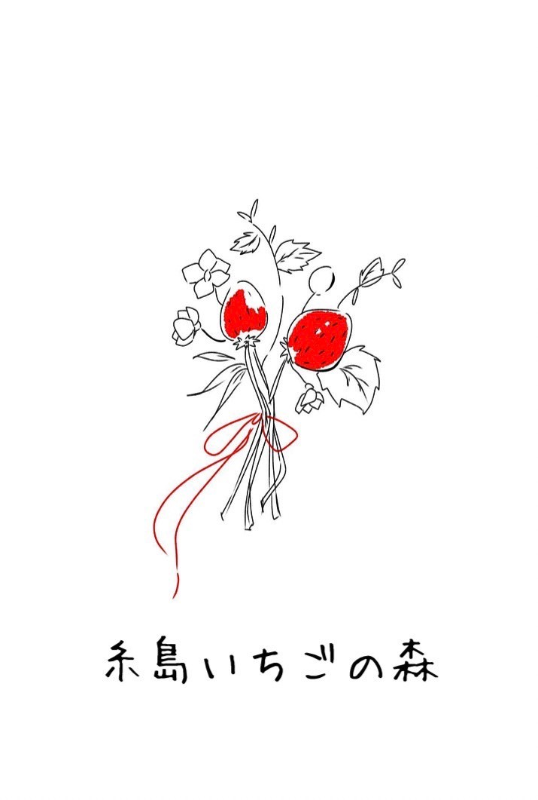
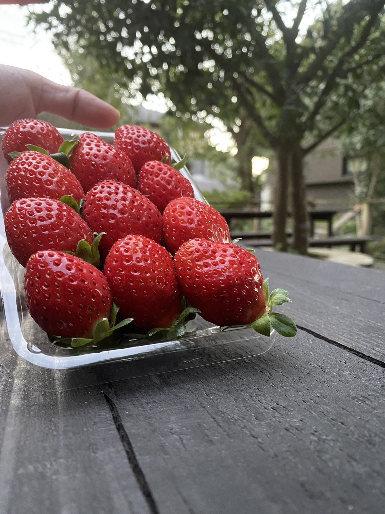
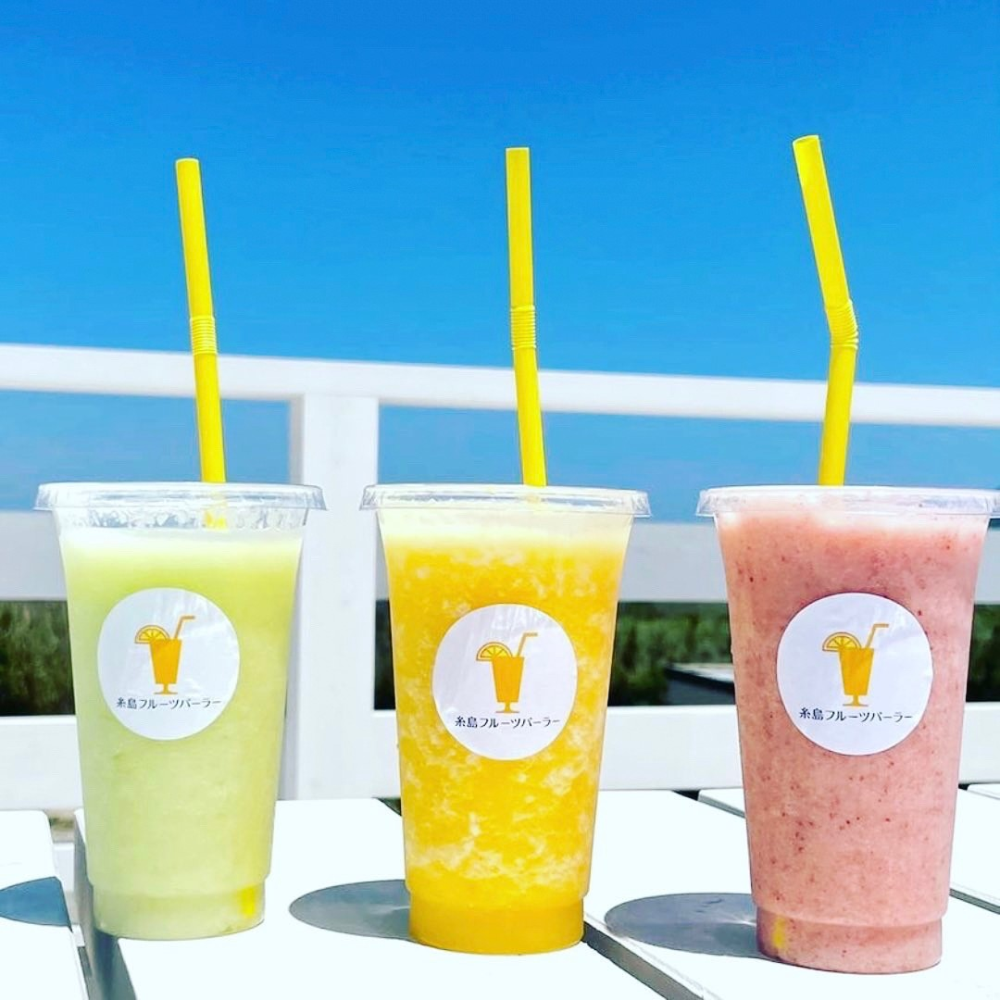
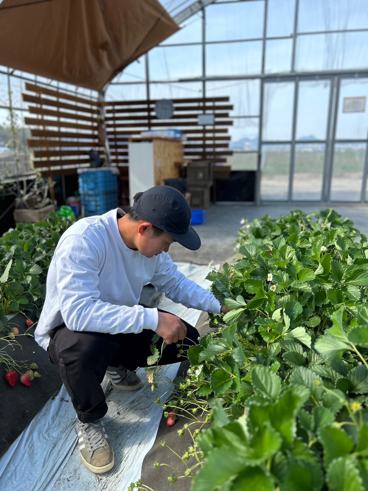
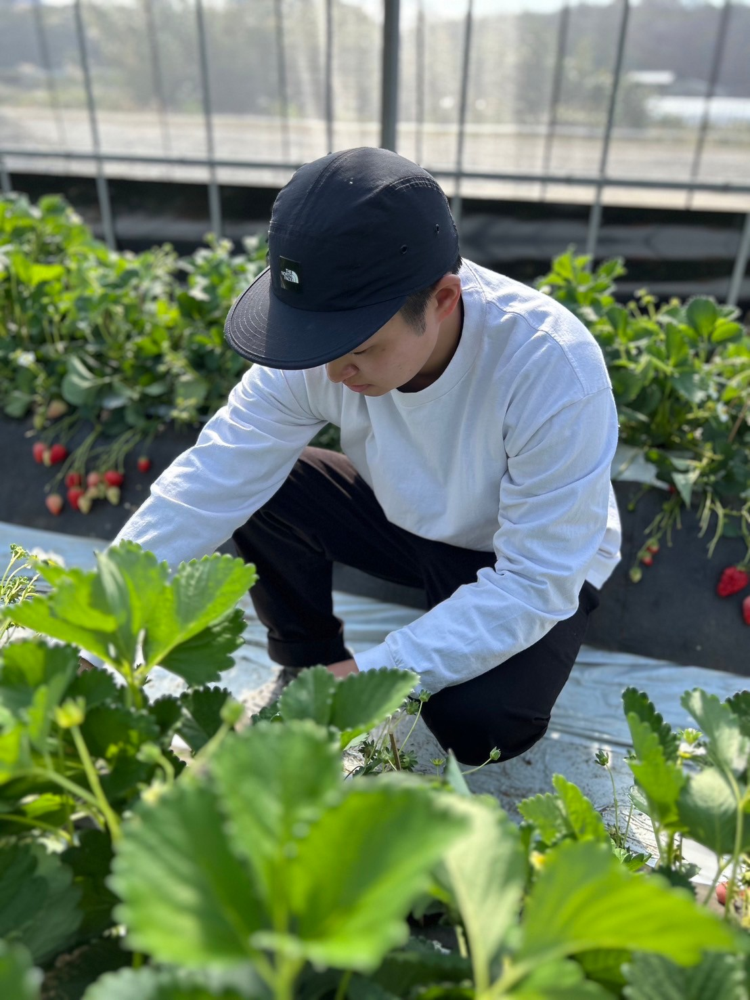
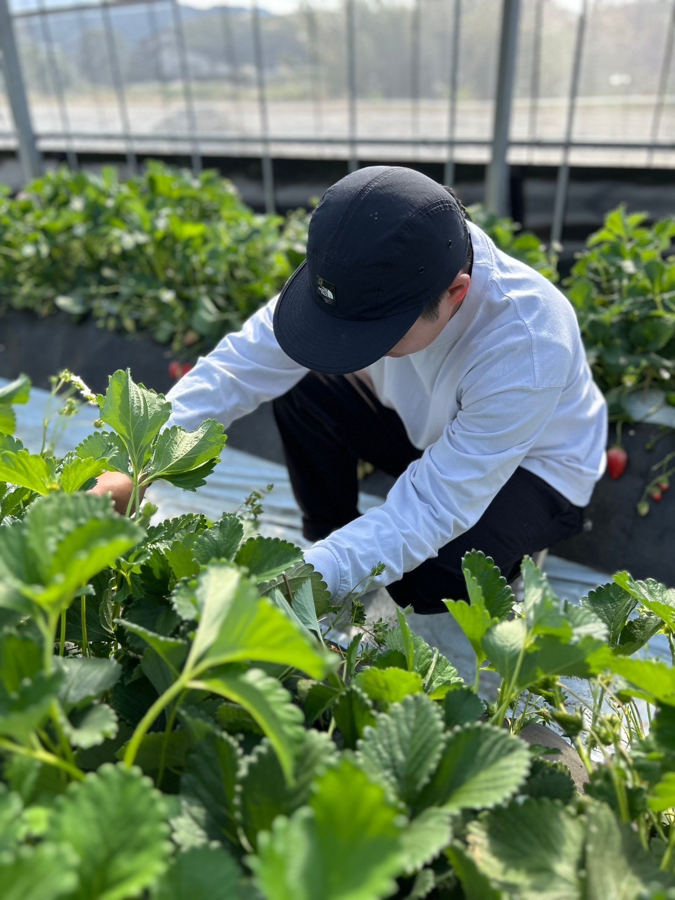
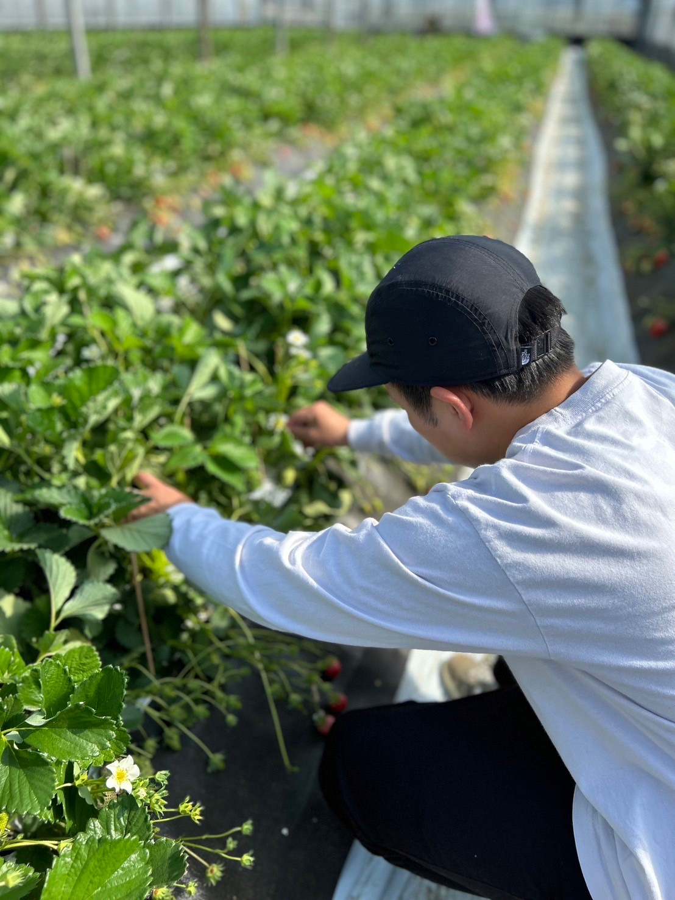

糸島いちごの森
福岡県糸島市の「糸島いちごの森」では、
真っ赤で甘く、豊かな香りが漂う「あまおう」が、
一粒一粒、心を込めて大切に育てられています。


プレミアムイチゴ「あまおう」
あ甘い
ま丸い
お大きい
う美味しい
「あまおう」は、「甘い」「丸い」「大きい」「美味しい」の頭文字から名付けられた、日本が誇るプレミアムイチゴです。
糸島の温暖な気候と豊かな土壌により、このイチゴには絶妙な甘みとジューシーさが宿り、まるで口の中でとろけるような滑らかさと芳醇な風味が楽しめます。
Farm
農園の様子




作り手のこだわりと情熱
「糸島いちごの森」では、農家の方々が丹念に手作業で収穫・選別を行い、ひとつひとつが大切に届けられます。
その手間ひまに裏打ちされたイチゴの美味しさには、作り手のこだわりと情熱が詰まっており、食べる人の心をしっかりと掴むことでしょう。
糸島フルーツパーラーでは、この厳選された「あまおう」を使用し、フルーツ本来の甘みと香りを最大限に引き出した無添加スムージーをお届けしています。